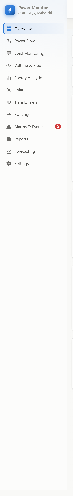
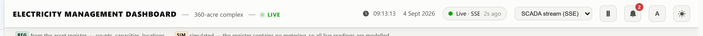

What the system is, the problem it addresses, and who it serves — written for a reader with no prior exposure to it and no electrical background.
Power Monitor is a web-based electricity management dashboard for the AOR complex at GE(N) Maint Isld — a 360-acre site containing 2,157 buildings, three electrical substations and 109 transformers. It presents, on a single set of screens, how much electrical power every part of the site is drawing, whether any part is drawing more than it should, and what the electrical supply quality looks like.
The dashboard displays 110 monitored locations, each identified by a stable tag such as
TW-01 (Tube Well No.1) or MED-HOSP (PNS Hafeez Hospital). Each
location has a defined consumption limit. When a location exceeds that limit, the system
raises an alarm that persists until an operator acknowledges it.IMPL
Before a system like this exists, a facility of this size has an inventory but no visibility. The maintenance organisation knows it is responsible for 980 street lights, 84 motor pumps and 14 tube wells, but it cannot answer three practical questions:
The dashboard is built to answer all three continuously rather than through periodic manual survey.
The source document for this project is an asset register: it records what exists and in what quantity. It contains no electrical measurements of any kind. A systematic search of the document returns zero occurrences of voltage, frequency, power factor, kWh, MVAR, generator, incomer, breaker, meter or demand.IMPL
Consequently every live reading shown by the dashboard is simulated, and is labelled as such in the interface. The structure — asset counts, transformer capacities, named locations, network topology — is real and traceable to the register. The readings are a working model awaiting connection to real metering.
The dashboard organises information into five categories:
| Category | What it covers | Primary screens |
|---|---|---|
| Consumption | Power drawn now, by location, by asset group and by substation; energy accumulated over time | Overview, Load Monitoring, Energy Analytics |
| Supply quality | Voltage, frequency, power factor, phase imbalance — whether the electricity arriving is within statutory limits | Voltage & Frequency, Overview |
| Network state | How power flows from intake to load; substation loading; breaker positions | Power Flow, Switchgear, Transformers |
| Exceptions | Locations over limit, meters not reporting, and a permanent record of every alarm | Alarms & Events, Overview |
| Planning | Generation from solar, forecast demand, spare capacity, exportable reports | Solar, Forecasting, Reports |
Table 1.1 — The five information categories and where each is presented.
| User | What they need from it |
|---|---|
| Control-room operator | Continuous view of whether anything is abnormal now; acknowledge and act on alarms. Uses Overview and Alarms & Events. |
| Maintenance engineer | Investigate a specific location — its trend, its limits, its alarm history. Uses Load Monitoring and its detail panel. |
| Electrical engineer | Supply quality, phase imbalance, substation loading, network topology. Uses Voltage & Frequency, Power Flow, Transformers. |
| Facilities manager | Consumption trends, energy totals, cost drivers, capacity headroom. Uses Energy Analytics, Reports, Forecasting. |
| Planner / project engineer | Whether spare capacity exists to connect new load. Uses Forecasting and Transformers. |
Table 1.2 — Intended audiences and the screens serving each.INTERP
While reconciling the register, one genuine documentary discrepancy was identified. The document states 14 tube wells, of which 12 are operational, but lists only 11 with locations. One operational tube well is unaccounted for. Tags TW-02, TW-06 and TW-12 have no register entry and are carried as unmonitored. This is a question for the facilities team, and the dashboard displays it rather than silently reconciling it.IMPL
How the dashboard is organised, how its parts relate, and the information hierarchy a reader should expect.
The dashboard follows a summary-then-detail structure. One screen answers "is anything wrong?"; eleven further screens answer "what, where, and why?". This mirrors how a control room is actually used: continuous monitoring of a single overview, with drill-down only when something demands attention.INTERP
Navigation is a fixed left-hand sidebar listing twelve destinations. It is always visible on screens wider than 900 pixels; below that it becomes a horizontal scrolling strip at the top of the page.IMPL The selected item is marked with a left accent bar and a tinted background. An alarm counter appears against Alarms & Events when unacknowledged alarms exist.

| Screen | Category | Question it answers |
|---|---|---|
| Overview | Situational | Is anything wrong right now? |
| Power Flow | Situational | Where is the electricity going? |
| Load Monitoring | Situational | What is each individual location drawing? |
| Voltage & Frequency | Quality | Is the supply itself healthy? |
| Energy Analytics | Analysis | How much have we consumed, and where? |
| Solar | Analysis | Is our generation performing as it should? |
| Transformers | Assets | What transformer capacity do we have? |
| Switchgear | Assets | What is the state of the protective equipment? |
| Alarms & Events | Exceptions | What has gone wrong, and was it handled? |
| Reports | Reporting | What are the period totals, and can I export them? |
| Forecasting | Planning | What will demand be over the next day? |
| Settings | Reference | Where does every number come from? |
Table 2.1 — The twelve screens, in navigation order.IMPL

The header remains constant across all twelve screens. Its most operationally significant element is the connection pill, which reports both the feed state and the age of the most recent message. A dashboard that silently freezes on stale values is the most dangerous failure mode this class of system has; the header is where that condition is made visible.INTERP
This bar is unusual for a dashboard and deserves comment. Because the register contains no metering, the interface would otherwise present modelled values with the same authority as measured ones. The two-badge scheme makes the distinction visible at the point of use rather than burying it in documentation.IMPL
Within the Overview screen, and repeated on the detail screens, the hierarchy runs:
Figure 2.4 — The four-level information hierarchy applied across the dashboard.INTERP
All twelve screens read from the same three in-memory models, so no two screens can disagree about the state of the plant:IMPL
A single render loop updates whichever screen is currently displayed, once per second. Screens that are not displayed are not rendered.
The implementation as it actually exists: languages, modules, runtime behaviour and dependencies.
| Layer | Technology | Notes |
|---|---|---|
| Frontend framework | None — vanilla JavaScript | Native ES modules loaded by <script type="module">. No React, Vue, Angular or Svelte.IMPL |
| Visualisation library | None — hand-authored SVG | All charts are generated as SVG by project code. No D3, Chart.js, Recharts or Plotly.IMPL |
| Styling | Plain CSS in index.html | CSS custom properties drive two themes. No Tailwind, Bootstrap or preprocessor. |
| Backend | Node.js node:http | Reference server in server/mock-scada.js. No Express, Fastify or Koa.IMPL |
| Database | None | No database of any kind. State is in browser memory and is not persisted across reloads, except UI preferences.IMPL |
| Runtime dependencies | Zero | package.json declares no dependencies or devDependencies. Nothing to npm install.IMPL |
| State management | Module closures | Each model is a factory function returning an object with private state. No Redux, MobX or signals. |
| Authentication | None | No login, session or access control exists in the implementation.IMPL |
| External services | None | No CDN, analytics, telemetry or third-party API calls. The application runs fully offline.IMPL |
| Node requirement | ≥ 18 | Declared in package.json engines. |
Table 3.1 — Technology stack, verified against the project files.
A facility of this type may operate on an isolated or air-gapped network. A build with no external dependencies, no CDN references and no build step can be deployed by copying a folder, and cannot break because a package registry is unreachable.INTERP
| Module | Lines | Responsibility |
|---|---|---|
src/register.js | 404 | The point register — every monitored location, its tag, group, substation, unit count, rated demand and limits. The single source of truth for what is monitored. |
src/source.js | 238 | Data-source abstraction. Three modes: in-browser simulator, server-sent events, REST polling. Includes the connection watchdog. This is the sole integration seam. |
src/simulator.js | 190 | Stand-in telemetry generator: diurnal demand profiles, mean-reverting noise, load excursions, comms dropouts. |
src/store.js | 271 | Reading history, exponential smoothing, energy accumulation, and roll-ups by group and substation. |
src/electrical.js | 200 | Derives voltage, current, power factor, reactive and apparent power, energy, losses and CO₂ from real power. |
src/limits.js | 434 | The alarm engine: limit evaluation, on/off delays, hysteresis, latching, acknowledgement, anti-flood re-arm, episode log. |
src/switchgear.js | 131 | Breaker, feeder and distribution-board state model. |
src/overview.js | ~290 | Renders the Overview screen and the Transformers screen. |
src/pages.js | ~510 | Renders Power Flow, Voltage & Frequency, Energy Analytics, Solar, Switchgear and Forecasting. |
src/ui.js | 843 | Point table, group cards, alarm lists, detail drawer, Reports screen, CSV export, connection banner. |
src/charts.js | 372 | Trend chart, sparkline, horizontal bar chart. |
src/charts-power.js | ~330 | Distribution doughnut, arc gauge, multi-series chart, single-line diagram. |
src/charts-pages.js | ~330 | Power-flow diagram, status grid, forecast band chart, load-duration curve. |
src/format.js | 84 | Number, unit, percentage and time formatting. |
src/app.js | 222 | Wiring: instantiates the models, binds navigation, runs the render loop. |
server/mock-scada.js | ~245 | Reference server: serves the static application and four API endpoints. |
Table 3.2 — Source modules and responsibilities.IMPL
| Endpoint | Method | Returns |
|---|---|---|
/api/readings | GET | The most recent sample set for every reporting point. Used by polling clients. |
/api/stream | GET (SSE) | Server-sent event stream, one frame per tick. Used by streaming clients. Primes immediately on connect and sends a keep-alive comment every 15 s. |
/api/points | GET | The full point register: tags, names, locations, groups, substations, unit counts, ratings and limits. |
/api/health | GET | Tick count, uptime, configured interval, connected stream clients, monitored point count, points reporting in the last tick. |
Table 3.3 — API surface of the reference server.IMPL
--interval../api/health with a 2.5 s timeout. If it responds, the stream is used; otherwise the in-browser simulator runs.localStorage retains only theme, display density and last-viewed screen. No readings are persisted.The render loop runs on a fixed timer rather than on data arrival. A fast feed therefore cannot overwhelm the interface, and — more importantly — a feed that stops still triggers repaints. This is what allows staleness, offline meters and a dead backend to surface on their own, instead of the display freezing on the last good value while appearing healthy.IMPL
Two scripts accompany the implementation:IMPL
scripts/verify-register.js — reconciles the point register against the totals stated in the source document (23 assertions covering building counts, asset counts, transformer units and installed capacity, plus limit-ladder coherence and duplicate-tag detection).scripts/test-alarms.js — 26 behavioural assertions on the alarm engine covering on-delay, anti-flood, hysteresis, acknowledgement, ringback, re-arm, comms detection and smoothing.Both run via npm test. All 29 checks pass on the analysed revision.
The path a single reading takes from origin to pixel, and where each transformation occurs.
Figure 4.1 — The complete data pipeline.IMPL
| Stage | Module | Transformation applied |
|---|---|---|
| Origin | simulator.js | Generates a kW value per point from its group's diurnal profile, plus mean-reverting noise, occasional excursions and comms dropouts. Points in dropout are omitted from the payload, never sent as zero. |
| Transport | mock-scada.js | Serialises the sample set to JSON and pushes it over SSE or serves it on request. |
| Integration | source.js | Normalises field-name variants, coerces numerics, discards malformed rows, and tracks feed health independently of content. |
| Smoothing | store.js | Exponential moving average with a 6-second time constant. The raw sample is retained alongside. |
| Accumulation | store.js | Integrates smoothed power over elapsed time into energy, per point and site-wide. |
| Aggregation | store.js | Sums points into group and substation roll-ups on every ingest; generation is signed negative in load groups but positive in the generation group. |
| Derivation | electrical.js | Computes all electrical quantities from real power using standard three-phase relationships. |
| Evaluation | limits.js | Compares the smoothed value against warning and alarm limits with timing and hysteresis rules. |
| Render | app.js + views | Writes only the DOM cells whose value changed. The displayed screen is rendered; others are not. |
Table 4.1 — Transformation applied at each pipeline stage.IMPL
Both transports carry an identical structure. This is the contract a real SCADA gateway must satisfy:IMPL
A meter that cannot be reached must be omitted from the readings array entirely.
It must never be sent as 0. The dashboard distinguishes "offline" from "drawing
nothing", and transmitting zeros would destroy that distinction — a genuinely dead circuit
and a failed communications link would become indistinguishable.IMPL
Because every screen reads from the models rather than the feed, replacing simulated data with
real data requires changing one module. In src/app.js the source is constructed with
a mode and two URLs; pointing those at a real gateway is sufficient. The source mode is also
switchable at runtime from the header.IMPL
The reader is tolerant of common field-name variants — tag or
pointId for id, kw or value for
kW, timestamp for ts — which reduces the amount of
adaptation a gateway needs.IMPL